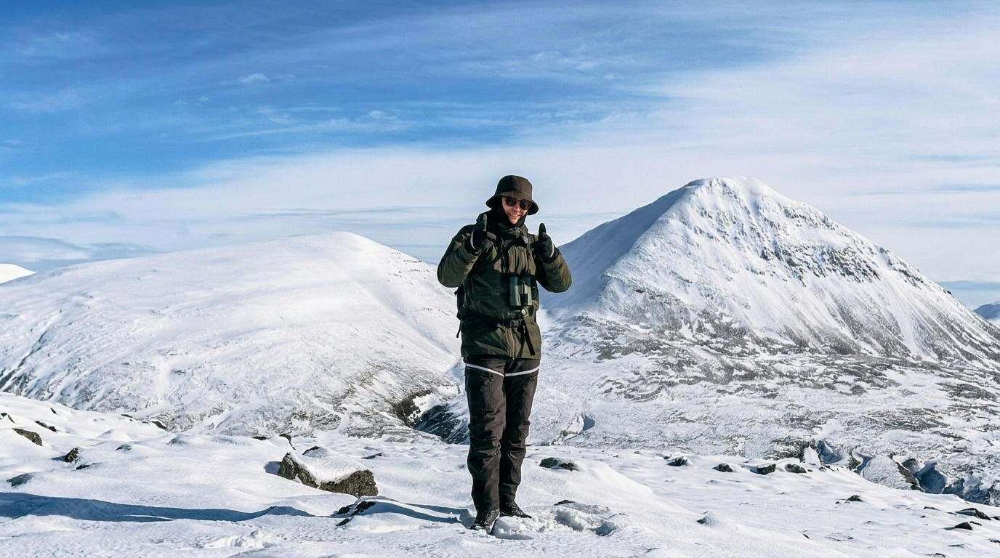

"Utmaningar är något jag tar emot med ett leende."
Mina styrkor är att jag är social, engagerad och har lätt för att anpassa mig i olika situationer samt alltid ger service i världsklass. Jag har med mig en lång erfarenhet av kundkontakt, både personligt och över telefon. Jag drivs av att arbeta i grupp och utvecklas tillsammans, samtidigt som jag är initiativtagande och kan jobba självständigt.
Idag studerar jag systemutveckling.Net på Campus Varberg. Denna bransch är ny för mig men ju längre utbildningen går desto mer känner jag att jag hittat rätt. Gnistan tändes när jag fick möjligheten att få vara med och sätta upp ett CRM system på Länsförsäkringar Larmcentral. Jag ville förstå hur det fungerade och blev frustrerad när mina idéer inte gick att implementera.
Tidigare jobb har inriktat sig på försäljning och kundservice. Som butikssäljare på Engelsons handlar det om att skapa rätt förutsättningar för ett aktivt uteliv och agera trovärdigt och rådgivande för alla kundtyper oavsett om du ska du ta dig upp för Islands vulkaner eller jobba i trädgården. På Borås Tidning var det att hjälpa företagen med deras marknadsföring och nå ut till rätt kunder med rätt strategi i rätt media. På Ung Företagsamhet jobbade vi i ett litet team för att hjälpa elever att starta, driva och avveckla ett företag. Att arrangera en mässa för 150 till 180UF-företag gav mig erfarenhet om hur viktigt det är med planering och samarbete.
Vad jag tycker om att göra på fritiden!